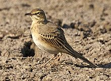
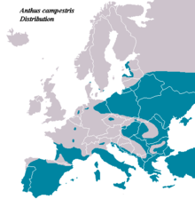
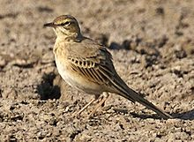
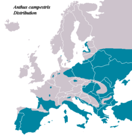

| Tawny Pipit | |
|---|---|
|  | |
| Conservation status | |
| Binomial name | |
| Anthus campestris (Linnaeus, 1758) |
|
|  | |
| Approximate distribution map |
| Tawny Pipit | |
|---|---|
|  | |
| Conservation status | |
| Binomial name | |
| Anthus campestris (Linnaeus, 1758) |
|
|  | |
| Approximate distribution map |
The Tawny Pipit, Anthus campestris, is a medium-large passerine bird which breeds in much of temperate Europe and Asia, and northwest Africa. It is a migrant moving in winter to tropical Africa and the Indian subcontinent.
This is a large pipit, 16 centimetres (6.3 in) long with wing-span 25–28 centimetres (9.8–11 in),[1] but is an undistinguished looking species on the ground, mainly sandy brown above and pale below. It is very similar to Richard's Pipit, but is slightly smaller, has shorter wings, tail and legs and a narrower dark bill. It is also less streaked. Its flight is strong and direct, and it gives a characteristic "schip" call, higher pitched than Richard's.[1]
Its song is a short repetition of a loud disyllabic chir-ree chir-ree.[1]
In south Asia, in winter some care must be taken to distinguish this from other large pipits which winter or are resident in the area, including Richard's Pipit, Blyth's Pipit and Paddyfield Pipit. Tawny Pipit is insectivorous, like its relatives.
The breeding habit is dry open country including semi-deserts. The nest is on the ground, with 4-6 eggs being laid.

{kind=link}
{kind=link}